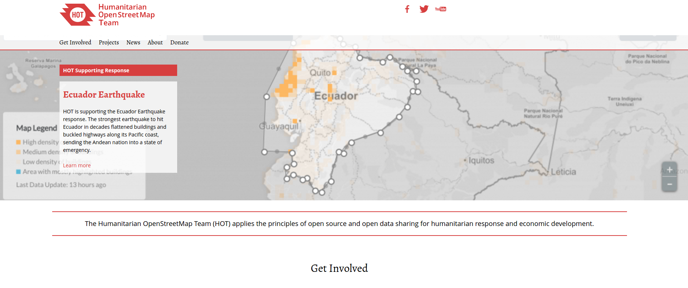
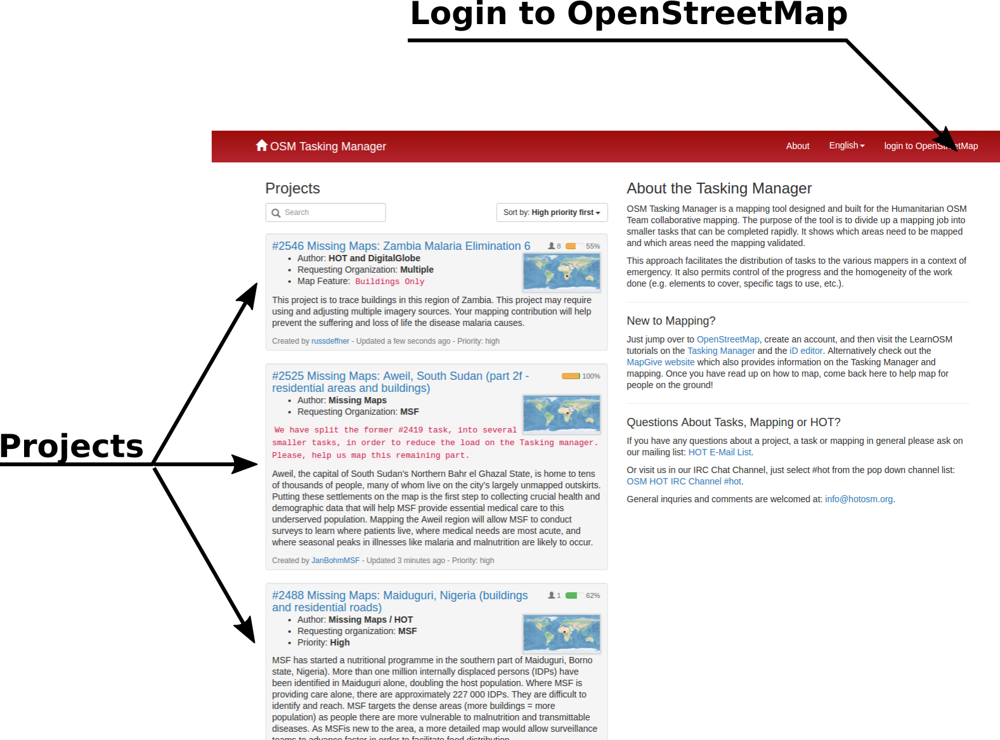
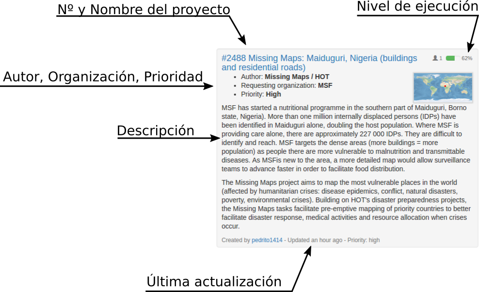
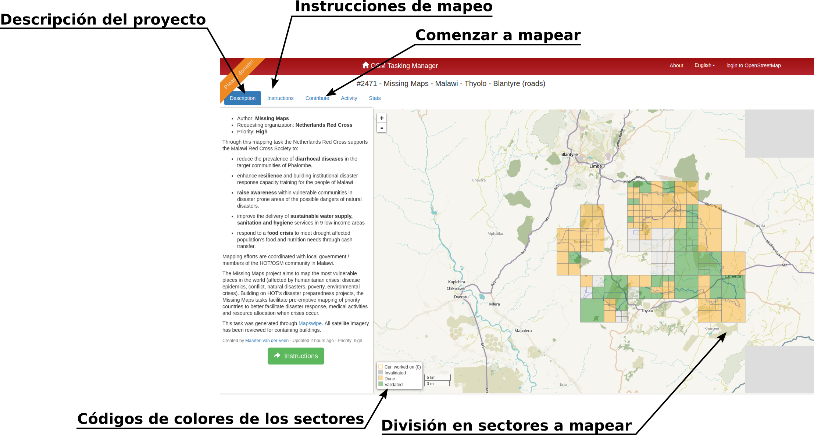
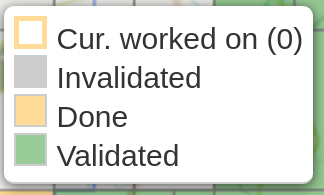
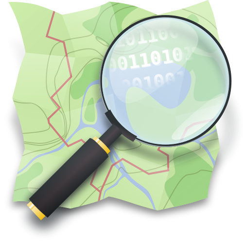
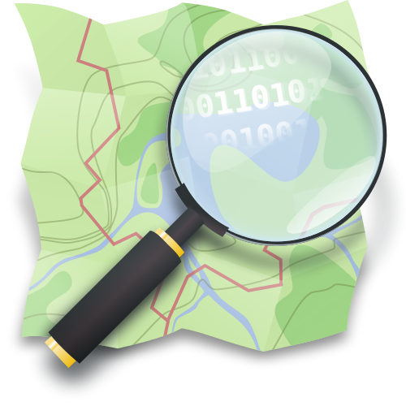

HOT: Humanitariam OpenStreetMap Team
Cartografía de Emergencia
Santiago Higuera

- @santiagohiguera
- Profesor en @caminosupm
- Mi empresa es Mercatorlab
- Participo en:
- Escribo en:
- eMail: santiago.higuera@upm.es
Enlaces a la documentación
- OpenStreetMap ES:
https://wiki.openstreetmap.org/wiki/ES:Wikiproyecto_España - Learn OSM:
http://learnosm.org/es/ - Task Manager:
http://learnosm.org/en/coordination/tasking-manager/ - Video tutoriales breves:
https://www.youtube.com/playlist?list=PLb9506_-6FMHZ3nwn9heri3xjQKrSq1hN - Key: Highway:
http://wiki.openstreetmap.org/wiki/Key:highway - Tagging Highways in Africa:
http://wiki.openstreetmap.org/wiki/Highway_Tag_Africa
What is OpenStreetMap?
What is HOT: Humanitariam OpenStreetMap Team?
HOTOSM: Humanitariam OpenStreetMap Team
 https://hotosm.org/What is Missing Maps?
El Tasking Manager de HOT
Task Manager: Página principal
http://tasks.hotosm.org
Task Manager: Proyectos
Mapa del proyecto
Códigos de colores de los sectores a mapear
Procedimiento
- 1.- Leer Descripción e instrucciones del proyecto: es importante mapear lo que nos piden que mapeemos
- 2.- Seleccionar un sector pendiente (gris) que no esté validado (verde) o ejecutado (naranja)
- 3.- Subir al servidor OSM los cambios que hayamos hecho. Añadir los comentarios que se indiquen
- 4.- Tras mapear, si creemos que el sector está terminado marcar como terminado, si no, simplemente desbloquear y salir
Empezar a mapear
- 1.- Pinchar en un sector sin hacer (de color gris)
- 2.- Pinchar en el botón 'Start Mapping'
- 3.- Seleccionar el editor en el botón: 'EDIT WITH'
- 4.- Pulsar SPLIT si el sector parece muy grande
Componentes de la información geográfica
Componente espacial: La localización y la geometría de los elementos que aparecen en el mapa. Es la que hace que la información sea calificada como geográfica
Componente temática: La naturaleza y las características particulares de los elementos que aparecen en el mapa. Responde a la preguna ¿Qué es?
La componente espacial: nodes, ways
Los elementos básicos del mapa de OpenStreetMap son:
- Nodes: Un nodo es un punto
- Ways: Un way es una polilínea
Si el primer y último punto de una polilínea coinciden, la polilínea será cerrada
No existen líneas curvas, se hacen a base de polilíneas
Ejemplo de Node en formato OSM
<node id="25496583" lat="51.5173639" lon="-0.140043" version="1" changeset="203496"
user="80n" uid="1238" visible="true" timestamp="2007-01-28T11:40:26Z">
<tag k="highway" v="traffic_signals"/>
</node>
Ejemplo de Way en formato OSM
<way id="5090250" visible="true" timestamp="2009-01-19T19:07:25Z" version="8"
changeset="816806" user="Blumpsy" uid="64226">
<nd ref="822403"/>
<nd ref="21533912"/>
<nd ref="821601"/>
<nd ref="21533910"/>
<nd ref="135791608"/>
<nd ref="333725784"/>
<nd ref="333725781"/>
<nd ref="823771"/>
<tag k="highway" v="residential"/>
<tag k="name" v="Clipstone Street"/>
<tag k="oneway" v="yes"/>
</way>
Adding a road in OpenStreetMap
Tipología de carreteras: etiqueta highway
Por el origen de OSM, se sigue la denominación del Reino Unido
- Motorway
- Trunk
- Primary, Secondary, Tertiary
- Residential
- Unclassified
- Path
Hay otros tipos más específicos:
http://wiki.openstreetmap.org/wiki/Key:highway https://wiki.openstreetmap.org/wiki/ES:Características_de_cartografía#HighwayHighway attributes
Se definen con etiquetas adicionales:
- incline: pendiente en %
- lanes: número de carriles
- oneway: (yes/no) sentidos de circulación
- surface: paved, unpaved, concrete,...
- oneway: (yes/no) sentidos de circulación
- maxspeed: velocidad máxima
- width: anchura
- ref: denominación oficial
- name: nombre (para calles)
Highway: otros elementos
Los elementos de las carreteras llevan la etiqueta 'highway' con el valor del tipo de elemento del que se trata
- highway: bus_stop - parada de autobús
- highway: motorway_junction - salida de autopista
- highway: traffic_signals - señales de tráfico
- highway: crossing - pasos de peatones
Highway: aprender más
Páginas interesantes en relación con el etiquetado de carreteras:
- Learn OSM: roads:
http://learnosm.org/en/coordination/remote-tracing/#roads - Etiqueta Highway:
http://wiki.openstreetmap.org/wiki/Key:highway - Highways in Africa:
http://wiki.openstreetmap.org/wiki/Highway_Tag_Africa - Ejemplos:
http://wiki.openstreetmap.org/wiki/Highway_tagging_samples - Highways in Towns:
http://wiki.openstreetmap.org/wiki/Highway_tagging_samples/urban - Highways out of town:
http://wiki.openstreetmap.org/wiki/Highway_tagging_samples/out_of_town
THE END
by @SantiagoHiguera de Geoinquietos Madrid
 

Esta obra está bajo una Licencia Creative Commons Atribución-NoComercial-CompartirIgual 3.0 Unported.